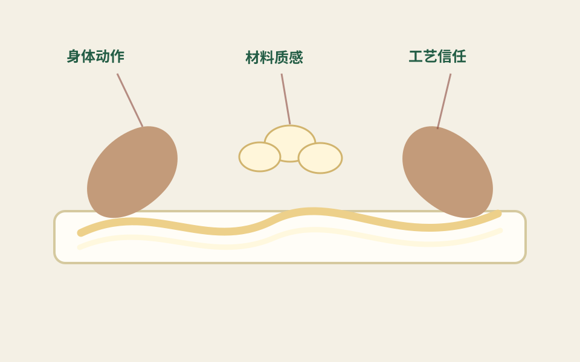

真实场景马鸣村的水乡语境AI生成前，应先理解真实河道、岸线和村落空间。
AI可以快速生成“古风”“丝绸”“江南”等图像，但它不一定真正理解马鸣村、桑蚕丝织劳动和蚕丝被工艺。本页展示AI图像可能带来的启发，也提醒读者注意其中的误读。
判断AI图像是否有效，首先要回到真实对象：水乡村落、手工过程和视觉符号都不能被简单替换成泛古风画面。


下面这些方向展示了AI生成传统文化图像时常见的想象路径，以及它可能忽略的地方。
下面不是为了展示“漂亮AI图”，而是把生成式图像当成研究对象：看它如何理解错马鸣村、桑蚕丝织技艺和宋韵文脉。
常见结果：亭台、灯笼、汉服人物、柔光水面。
主要误读：把宋韵等同于泛古风，把桑蚕丝织技艺从生产系统降格为装饰氛围。
修正方向：加入“桐乡洲泉、马鸣村水网、桑园、蚕丝被手工拉制、真实作坊、普通村民”等具体词。
常见结果：白色床品、酒店卧室、模特躺睡、极简家居。
主要误读：产品变得精致，但产地、工艺、桑蚕丝织传统和地方记忆全部消失。
修正方向：要求呈现“丝绵层次、多人拉制、手部动作、洲泉蚕丝被、江南水乡展厅或作坊”。
常见结果：热闹巡游、龙舟、彩旗、人群，但缺少仪式顺序和桑蚕语境。
主要误读：把非遗看成节庆奇观，忽略蚕神信仰、清明节令、水乡空间和共同体参与。
修正方向：加入“蚕花姑娘、祭祀蚕花娘娘、撒蚕花、岸边观看者、河道空间、清明祈蚕”等要素。
常见结果：红金配色、龙纹、宫殿、神秘东方符号。
主要误读：跨文化传播变成刻板东方化，与马鸣村的平凡生活、手工材料和宋韵清润气质相距很远。
修正方向：改用“natural silk bedding, handmade craftsmanship, water-town village, quiet sleep, heritage sericulture”等表达。
如果AI生成的图像看起来很美，但没有地方、没有劳动、没有真实工艺，它就很可能只是泛古风图像。
判断图像是否混入唐风、明清家具、现代网红景观等不合适元素。
判断图像是否呈现南宋畿辅地区的桑蚕丝织村落、水网、桑园、作坊和村落空间。
判断图像是否保留采桑、喂蚕、拉丝、铺被等身体技艺。